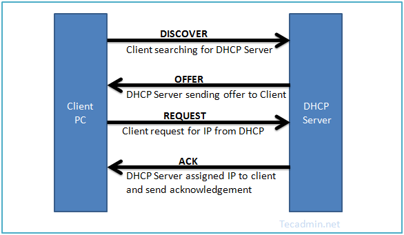

Dynamic Host Configuration Protocol
A DHCP szerver-kliens alapú protokoll, nagy vonalakban a kliensek által küldött DHCP-kérésekből, és a szerver által adott DHCP-válaszokból áll.
Dinamikusan oszthatóak ki IP-címek, tehát a hálózatról lecsatlakozó számítógépek IP-címeit megkapják a hálózatra felcsatlakozó számítógépek, ezért hatékonyabban használhatóak ki a szűkebb címtartományok.
A DHCP engedélyezéséhez a rendszergazdáknak különböző típusú csomagok áthaladását kell engedélyezni a szerveroldali tűzfalon. Minden DHCP-csomag UDP-datagramként halad tovább; az összes kliensoldali csomag forrása a 68-as és célja a 67-es port; a szerveroldalon ez pont fordítva.
3 féle IP-kiosztás lehetséges DHCP-vel:
- kézi (MAC-cím alapján)
- automatikus (DHCP-vel kiadható IP-tartomány megadásával)
- dinamikus (IP-tartomány megadásával, de az IP-címek „újrahasznosításával”)

Dhcp müködése lépésekben:
- Az eszköz elindul vagy hálózati kapcsolatot próbál létrehozni.
- Az eszköz elküld egy DHCP Discover üzenetet a hálózaton.
- Az üzenetet elérhető DHCP szerverek veszik észre, és válaszolnak egy DHCP Offer üzenettel, amely tartalmazza az elérhető IP címeket és egyéb hálózati beállításokat.
- Az eszköz fogadja az ajánlatokat, és válaszol egy DHCP Request üzenettel az egyik szervernek, amelyiket kiválasztja.
- A kiválasztott DHCP szerver elküldi a DHCP Acknowledgment üzenetet az eszköznek, amelyben megerősíti az IP cím és egyéb beállítások kiosztását.
Vissza a főoldalra